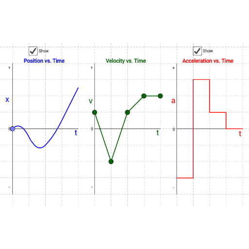
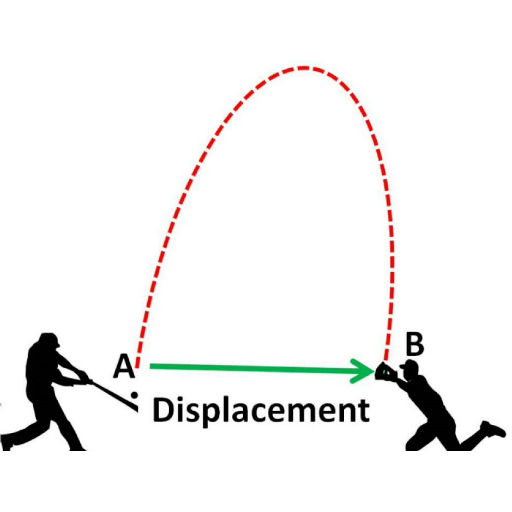
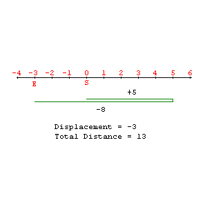

P > V > A
Position: The initial function
Velocity: Derivative of position
Acceleration: Derivative of Velocity

Mr. Ross
Mr. Williamson
Mr. Ortega
Alec G
Rick H
Susie Q
Yifan Y
Position: The initial function
Velocity: Derivative of position
Acceleration: Derivative of Velocity

To find displacement, just use p(b) minus the p(a).
You can also find the average velocity with displacement / (b - a)

To find the total distance, you need to find the critical point by differentiate the position function. Then you will need to add add the displacement between each critical points.
You can also find the average speed with total
distance / time
